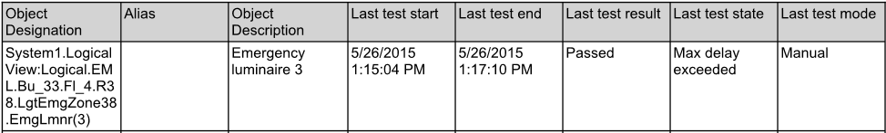
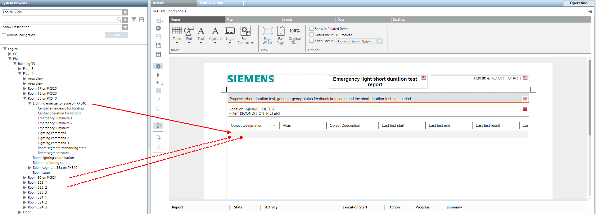
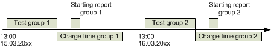
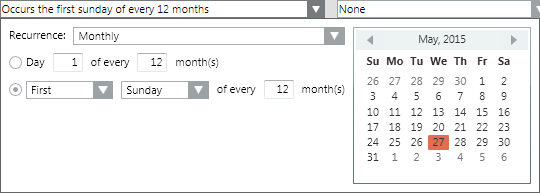
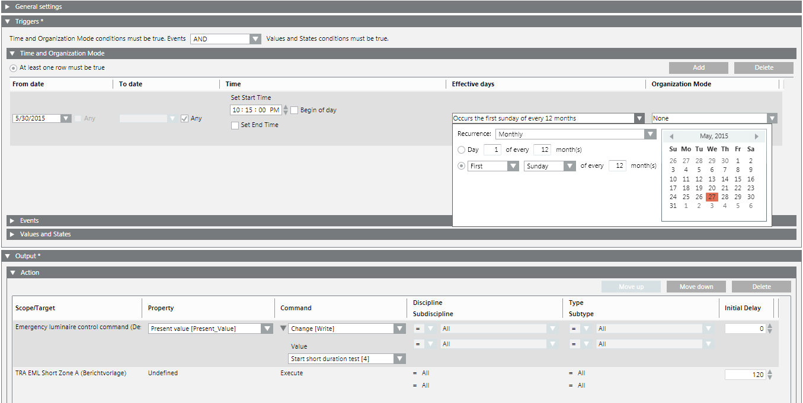

Operating and Testing Emergency Lighting
Emergency lighting is generally switched on and off in groups. Individual tests can be conducted manually for each emergency light.
The test workflow is as follows:
- Test emergency lighting
- Create a report
- Load battery before starting the next test
Prerequisites:
- The System Browser is in Operating mode.
- In System Browser, Management View is selected.
Switching On and Releasing Group
Emergency lighting can be switched on in advance if the time of the power outage is known.
- Select Applications > Logics > Central Functions > [Hierarchy Name] > Emergency Lighting [Category] > CenEmgLgt [Emergency Lighting (CenEmgLgt)].
- In the Operation tab, select the Emergency Lighting Control Command property.
- Click Manual.
a. In the Value drop-down list, select an option.
b. Click Send.
- Emergency lighting is switched on at priority 8.
Manually Testing Group
- Select Applications > Logics > Central Functions > [Hierarchy name] > [Hierarchy 1-n] > [Central Functions for Emergency Lighting] > [Central Function Emergency Lighting for Zone A (CenEmgLgt ZoneA)].
- Select the Operation tab.
- Displays emergency lighting properties.
Starting Function Test
The function test briefly places the device in a power outage state. The test does not impact battery capacity.
- Central function Emergency Lighting and the corresponding group are selected.
- Select the Emergency Lighting Control Command.
- In the Value drop-down list, select option Start function test.
- Click Change.
- The function test starts .
- The function test concludes after about one minute .
- The test result must be read from emergency luminaires with a report.
Starting Short Duration Test
The short duration test places the device in power outage state long enough to calculate battery capacity without fully discharging the battery.
- Central function Emergency Lighting and the corresponding group are selected.
- Select the Emergency Lighting Control Command.
- In the Value drop-down list, select option Start short duration test.
- Click Change.
- The short duration test starts .
- The short duration test takes about 10 to 60 minutes depending on device type .
- The test result must be read from emergency luminaires with a report.
Starting Long Duration Test
The long duration test places the device in power outage state long enough to measure battery capacity.
- Central function Emergency Lighting and the corresponding group are selected.
- Select the Emergency Lighting Control Command.
- In the Value drop-down list, select option Start duration test.
- Click Change.
- The long duration test starts .
- The long duration test takes about 1 to 5 hours depending on device type .
- The test result must be read from emergency luminaires with a report.
Stopping Active Test
Stops a running function or running continuous test. A cancelled test must be repeated within a defined period as per national standards.
- Central function Emergency Lighting and the corresponding group are selected.
- Select the Emergency Lighting Control Command.
- In the Value drop-down list, select option Stop active test.
- Click Change.
Overriding Rest Operating Mode
Overrides the active power outage state and switches off emergency lighting. Can only be run for active power failure state. The function relieves batteries if the situation is safe.
- Central function Emergency Lighting and the corresponding group are selected.
- Select the Emergency Lighting Control Command.
- In the Value drop-down list, select option Go to rest mode.
- Click Change.
Switching on Inhibit Operating Mode
Prevents the device from going to the power outage state. Can only be run as long as power is available. Used for planned power outages.
- Central function Emergency Lighting and the corresponding group are selected.
- Select the Emergency Lighting Control Command.
- In the Value drop-down list, select option Go to inhibit mode.
- Click Change.
Switching off Inhibit Operating Mode
Removes the Inhibit operating mode and switches the device to normal operation. Can only be run as long as power is available.
- Central function Emergency Lighting and the corresponding group are selected.
- Select the Emergency Lighting Control Command.
- In the Value drop-down list, select option Cancel Inhibit mode.
- Click Change.
Reset Hours of Operation
Resets hours of operation on emergency lighting. Generally used when periodically changing the luminaires. Hours of operation reset must be done on the individual object if only individual defective luminaires are replaced.
- Central function Emergency Lighting and the corresponding group are selected.
- Select the Emergency Lighting Control Command.
- In the Value drop-down list, select option Reset lamp op. hours.
- Click Change.
- The hours of operating are reset .
- The hours of operating are reset .
Enabling Switch-off Pulse
Switchable and dimmable devices that are not controlled by a local switch remain in an emergency state after a function or continuous test. The command sets the emergency state to Off.
- Central function Emergency Lighting and the corresponding group are selected.
- Select the Emergency Lighting Control Command.
- In the Value drop-down list, select option Switch-off pulse.
- Click Change.
Creating Test Report
Three predefined reports are available to document conducted tests:
- Function test
- Short duration test
- Long duration test
- The Emergency Light reports are imported.
- In System Browser, select Application View.
- Select Applications > Reports.
- Open the Reports tab.
- Select State and then one of the following reports:
- Emergency Light Status Function
- Emergency Light Status Short Duration
- Emergency Light Status Long Duration
Note: These are the standard reports that cover all emergency luminaires in the building. Create your own Reports. - Click Run
 .
. - The test report is generated.
- Select Create and view PDF
 .
. - Click Print .
- The test report is printed.


NOTE 1:
The report displays state information in the language defined for the emergency luminaires.
NOTE 2:
A report of the previous test must be created before selecting another test type for testing.
Creating Own Report
The existing reports always acquire the entire building. Create your own reports for each zone that is tested.
Create a report
- The Emergency Light reports are imported.
- In System Browser, select Application View.
- Select Applications > Reports.
- Open the Reports tab.
- Select State and then one of the following standard reports:
- Emergency Light Status Function
- Emergency Light Status Short Duration
- Emergency Light Status Long Duration
- Click Save As
 .
. - In the New Object dialog box, enter a name and description.
- Click OK.
- The new document displays in System Browser.
Defining Report Content
- The Emergency Light reports are open.
- In System Browser, select Logical view.
- Select Logical > [Hierarchy name] > [Hierarchy 1-n] > [Room n] > [Emergency Lighting Zone (LgtEmgZone)].
- Drag the object to the report.
- Repeat Steps 2 and 3 on all objects covered by this report.

Defining Report Output
- The Emergency Light reports are open.
- Select the Settings tab.
- For Report output click the symbol on the bottom right
 .
. - The Report Output Definition opens.
- Select Report Format (for example, PDF) and define the destination type (for example, file).
- Click Configure Folders.
- The Report Output Folders Configuration dialog box opens.
- Enter the path and alias name of the target folder.
- Click Add.
- Click Close.
- In the Report Output Definition, click Add.
- The defined output is displayed in the List of Folders for Report Output.
- Click Close.
- Click OK.
- Click Save
 .
.
- The report is configured and is saved as a PDF file when running a reaction.
Automatically Testing Group
When running tests, remember that there is no automatic feedback that the test is finished or the battery is fully charged. For this reason it is important to calculate sufficient reserve time to start the test report group 1 and test group 2 *charging time of batteries for group 1).

Creating Automatic Execution
The following description applies to a long duration conducted once a year. The example may need to be modified depending on the function selected and project.
- The test report is configured and the storage location defined.
- Select Applications > Logics > Reactions.
- Open the Reaction Editor tab.
- Open the Triggers expander.
- Open the Time and Operating Mode expander and click Add.
- Define the following entries:
- From date
‒ Enter the create date. - To date
‒ Select check box Any. No end date is defined. - Time
‒ Enter, under Set start time the execution time 10:00:00.
‒ Clear check box Set end time. - Effective days
‒ For Recurrence, select Monthly.
‒ Selection the options First, Sunday every 12 months.
- Open the Output > Action expander.
- Select Applications > Logics > Central Functions > [Hierarchy name] > [Hierarchy 1-n] > [Central Functions for Emergency Lighting] > [Central Function Emergency Lighting for Zone A (CenEmgLgt ZoneA)] > Emergency Luminaire (EmgLmnr) > Command Emergency Luminiare (EmgLmnrCtl).
- Drag the Emergency Light Object to the Action expander.
- Define the following entries for the Emergency Light Object:
- In the Property property, select Present Value.
- In the Command column, select option Change [Write].
- In the Command column, in the field Value, select option Start duration test [3].
- In the Initial delay column, enter a time in seconds [0 = immediate].
- Select Applications > Reports > Status > [Test report].
- Drag the Emergency Light Report to the Action > Action expander.
- Define the following entries for the Emergency Light report:
- In the Property property, select Not defined.
- In the Command column, select option Run.
- In the Delay column, enter a time in seconds [18000 = 5 hours].
- Click Save .
- The test report is created once the executed reaction is finished.
